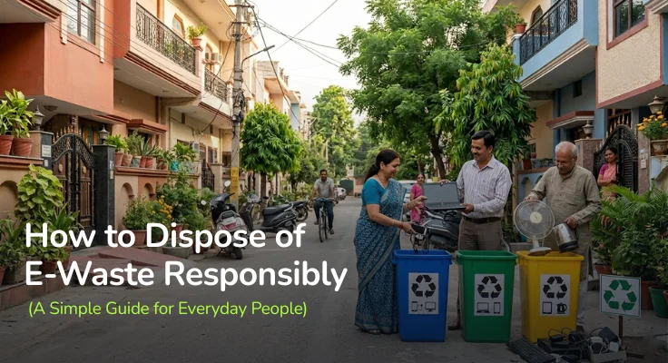

You have decided to finally deal with that box of old electronics. Good. Now what?
Most people get stuck here. They know they should not just throw old gadgets in the bin, but they are not sure what the alternative looks like. At E2E Recycling, we get this question all the time. As India's fastest growing e-waste recycling company, we have helped thousands of people across Bangalore, Hyderabad, and Chennai take that first step. So here is a straightforward guide with no jargon and no guilt, just practical steps.
Before anything else, take everything out and sort it into three groups.
The first group is devices that still work. A phone from a couple of years ago that your parents might use. A laptop that is slow for you but fine for basic tasks. These do not need to be recycled yet. They can be donated, sold, or given away. E2E Recycling actively promotes this kind of reuse because the greenest device is always the one that is already in someone's hands.
The second group is devices that can be repaired. Before you write something off, check if a local repair shop can fix it for a reasonable price. Extending the life of a device by even two more years keeps it out of the waste stream and saves you money.
The third group is devices that are truly at the end of their life. Dead batteries, cracked screens beyond repair, broken appliances, old office computers. Hand these directly to E2E Recycling. This is exactly what we were built for.
This is the part that feels hard but is actually the simplest decision you can make.
E2E Recycling is a CPCB-certified, end-to-end e-waste recycler and metal extraction company. That means we do not just collect your old devices and pass them along. We handle the entire process, from collection and data destruction to responsible recycling and recovering valuable metals like gold, copper, and cobalt from what most people would call junk. Our goal is simple: turn today's waste into sustainable resources for tomorrow.
You do not need to hunt for a drop-off point, call multiple numbers, or figure out which recycler is legitimate and which is not. Just reach out to E2E Recycling and we will take it from there. We offer doorstep pick-up, so getting rid of your e-waste responsibly does not even require you to step out.
We also partner with housing societies, schools, and local and national businesses to run community e-waste collection drives. If you would like us to organise one in your area, get in touch and we will make it happen.
One thing that often worries people is what happens to the information stored on an old phone or laptop.
At E2E Recycling, every device that comes to us goes through 100% certified digital data destruction before it is recycled or processed further. Your photos, passwords, bank details, work files, none of it goes anywhere it should not. You hand it to us and you can stop worrying about it completely.
When you drop off or hand over your devices, we provide proper documentation confirming your e-waste was collected and handled responsibly. You have a record, and you have peace of mind.
Batteries deserve a special mention because they are often forgotten.
Lithium-ion batteries found in phones, laptops, and electric vehicles need to be handled with particular care. They can catch fire if punctured or crushed, which is exactly what happens when they end up in a regular garbage truck or crusher.
Never throw batteries in the bin. Hand them directly to E2E Recycling. We collect and recycle batteries safely, keeping them out of landfills and away from the hands of people who cannot handle them properly.
Old air conditioners, refrigerators, and washing machines contain refrigerants and other substances that are harmful if released into the atmosphere. Most people have no idea how to get rid of these safely, and that is completely understandable.
E2E Recycling handles large appliances and end-of-life WEEE, that is Waste Electrical and Electronic Equipment, at any scale. Whether it is a single old fridge or an entire office clearout, just reach out to us and we will arrange pick-up and handle everything from there.
It is tempting. He comes to your door, pays you for the old stuff, and takes it away. Easy.
The problem is that informal scrap dealers have no way to safely handle the toxic materials inside electronics. Devices get broken apart by hand, metals are extracted using acid and fire, and the rest gets dumped or burned. There is no data destruction, no environmental accountability, and no safety for the people doing the work.
E2E Recycling is the responsible alternative. We are a certified clean-tech company that handles your old electronics legally, safely, and with full transparency. Choosing us over an informal dealer costs you nothing extra and makes a genuine difference.
Managing e-waste responsibly does not require a big effort. It just requires the right partner.
Whatever you have sitting at home or in your office, old phones, dead laptops, broken appliances, used batteries, hand it all to E2E Recycling. We will take care of the rest. Today's waste really can become tomorrow's resource. And it starts with you reaching out to us.